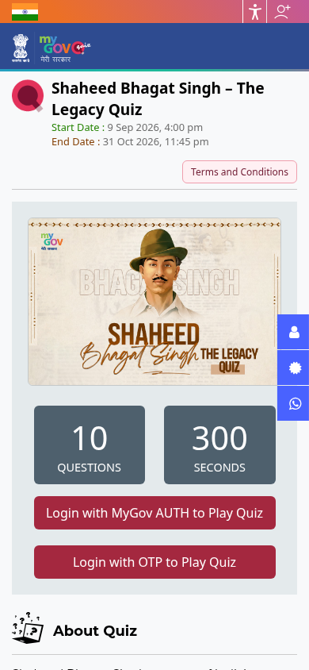
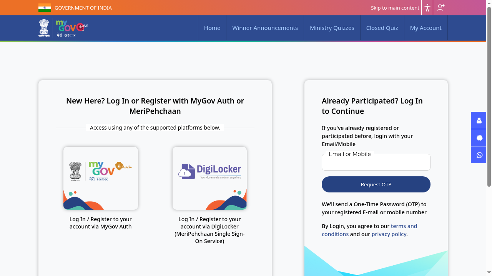

Bhagat Singh Legacy Quiz: how to take part before 31 October
The official Shaheed Bhagat Singh Legacy Quiz currently lists 31 October 2026 at 11:45 PM as its end date, but displays Closed. The archive post used a 30 September deadline. The date changed; participation is still not verified, so this guide is a dated record rather than an invitation to enter.

Official publisher artwork hosted by its publisher. Official source. Independent guide, not affiliated or sponsored. Artwork and trademarks belong to their owners.
The subject and format
The quiz concerns Bhagat Singh's life, ideas, writings and contribution to India's freedom movement. The page lists ten questions and three hundred seconds, or five minutes.
The displayed terms say the quiz is in English. Prepare from reliable historical sources rather than treating a generated summary as an answer key.
Status: live, corrected 19 October 2026
An earlier check of the quiz page showed a Closed label alongside a future end date. Re-checking the official page on 19 October 2026, the quiz is live: it shows 10 questions in 300 seconds, both login-to-play buttons, and an end date of 31 October 2026, 11:45 pm. The prizes, selection and eligibility sections below still apply as listed on the page.
How to take part: step by step
Checked on the live MyGov quiz page on 19 October 2026.
- Open the official quiz page: quiz.mygov.in/quiz/shaheed-bhagat-singh-the-legacy-quiz. Check the dates and read the Terms and Conditions.
- Choose Login with MyGov AUTH to Play Quiz or Login with OTP to Play Quiz.
- Sign in with your MyGov account, or create one with your mobile number or email and verify the OTP.
- Fill the profile details the quiz asks for.
- Start the quiz and answer the 10 questions within 300 seconds (5 minutes). You get one attempt, so use a stable connection.
- Submit and keep the confirmation or certificate download the page offers.


Steps 4-6 happen inside your account, so they are not shown as screenshots.
Video guides
We searched YouTube on 19 October 2026 for a step-by-step video in English and in Malayalam for this exact quiz. We could not verify one that is current and accurate, so we are not linking any rather than risk outdated or unrelated instructions.
Listed prizes
The page lists fifty winners receiving ₹2,000 each and thirty winners receiving an educational heritage visit to the Shaheed-e-Azam Museum in Punjab. It also describes digital participation certificates.
A listed prize is not an award to every person who reads the page or answers correctly. Travel arrangements and expenses require the actual organiser's rules and confirmation.
Selection wording is more specific
The terms say participants who answer all questions correctly and submit within the stipulated time enter a central eligibility pool. Winners are selected through an automated random process.
The page also uses top-scorer wording in its summary. Read the detailed terms rather than turning the archive's top-fifty shorthand into a guarantee of selection by score alone.
Eligibility and fairness
The displayed rules exclude employees connected with the organisers and their immediate families. Read all current eligibility terms before attempting if access is available.
Use the official account and follow the quiz's fairness rules. Do not submit as another person or manufacture a certificate. A timed government quiz is not an invitation to evade its conditions.
Preparation if officially reopened
- Recheck visible status and the current end date.
- Read eligibility, format and selection terms.
- Confirm the account details required by MyGov.
- Study verified historical material.
- Use a stable connection for the timed attempt.
- Review any rules about attempts and assistance.
- Keep official submission confirmation.
- Retrieve any earned certificate through the actual account.
This is conditional preparation, not a claim that entry is now open.
Certificate versus prize
A participation certificate records participation under the platform's process. It is not the same as a winner notification or a cash payment.
No certificate was downloaded or inspected here. The article should not be used to claim that the reader completed the quiz.
Costs and scam safety
The checked quiz page does not show a paid entry checkout. Do not pay an unofficial contact to reserve a winner slot or release a prize.
Never share a bank password, UPI PIN or OTP with a claimed organiser. Verify any prize communication through the official platform and share only the information the legitimate process requires.
India and Kerala readers
The museum is in Punjab, not Kerala. A listed educational visit is not a guaranteed paid holiday or locally available event.
Check language, eligibility and travel conditions rather than assuming every MyGov quiz has the same rules.
What changed since the original post?
We correct the old September deadline to the currently listed October date and add the detailed random-selection wording. On 19 October 2026 we re-checked the live page and corrected the earlier Closed label: the quiz is open until 31 October 2026.
Frequently asked questions
Is the quiz confirmed open?
No. The checked page displays Closed.
Does a correct attempt guarantee ₹2,000?
No. Selection terms apply.
Was an attempt made here?
No.
Sources: Official quiz status and terms. Checked 7 October 2026.